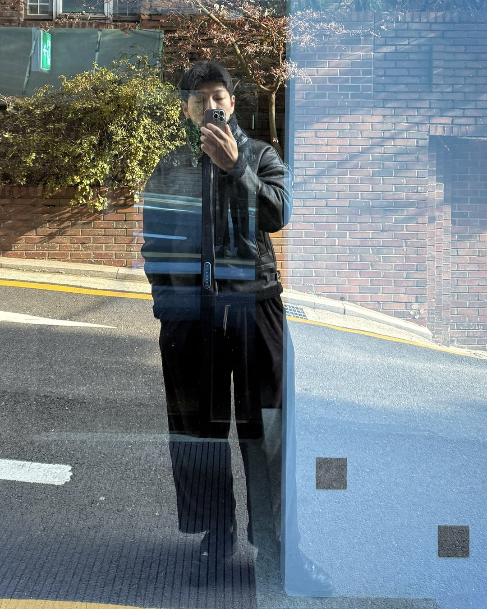
헤어진 남자가 크리스마스 전에,
연락하는 이유 3
(12월에 "잘 지내?"가 오는 이유.)
1/14
@mszexc
넘겨보세요 →
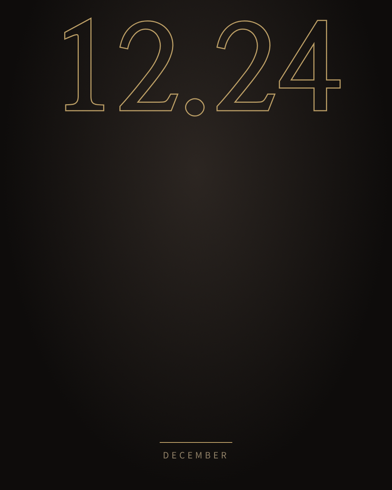
헤어진 남자의 연락은
날짜를 따라와요.
(생일 · 연말 · 크리스마스 앞에서 흔들려요.)
2/14
@mszexc
남자들끼리 하는 말 #75
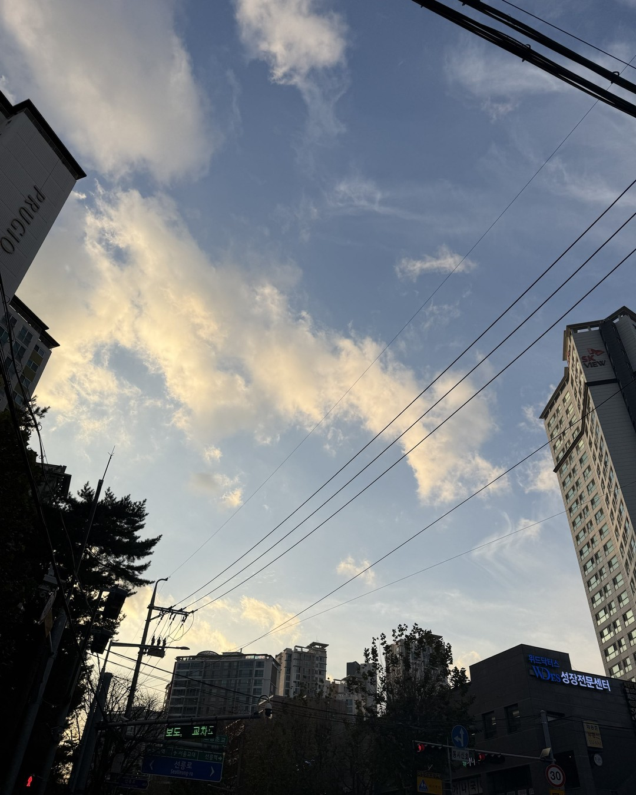
첫 번째.
혼자인 연말이 처음 실감 나서.
(거리에 커플이 보일 때, 당신이 떠올라요.)
3/14
@mszexc
남자들끼리 하는 말 #75
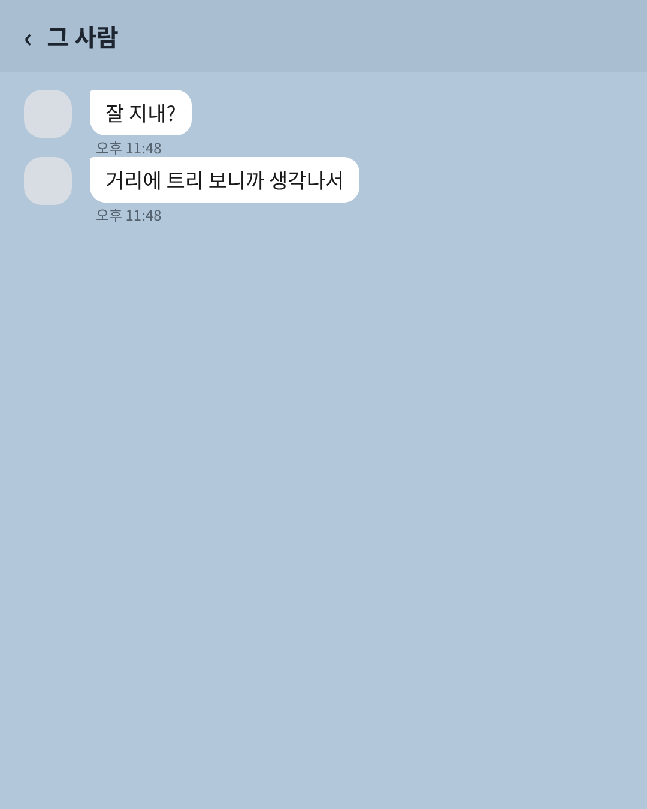
이때 연락은
그리움이 반, 외로움이 반이에요.
(어느 쪽인지는, 다음 행동에서 보여요.)
4/14
@mszexc
남자들끼리 하는 말 #75
두 번째.
작년 크리스마스가 생각나서.
(같이 간 곳 · 같이 본 것이 떠올라요.)
5/14
@mszexc
남자들끼리 하는 말 #75
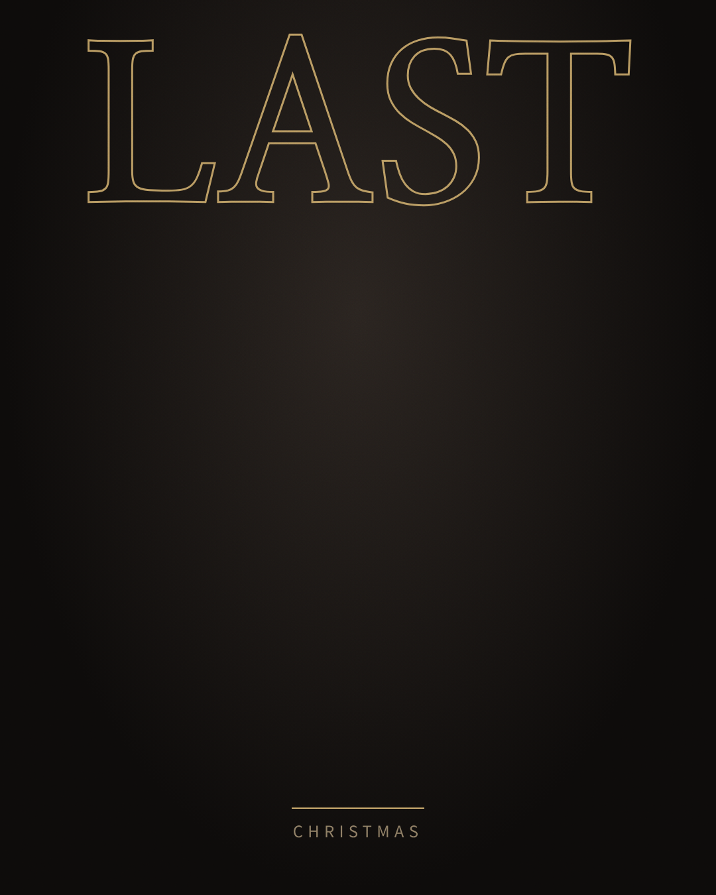
남자는 기념일보다
장면을 기억해요.
(트리 앞에서 찍은 사진 한 장 같은 거요.)
6/14
@mszexc
남자들끼리 하는 말 #75

세 번째.
해가 바뀌기 전에 정리하고 싶어서.
(미안했던 걸 말하거나, 다시 해 보고 싶거나.)
7/14
@mszexc
남자들끼리 하는 말 #75
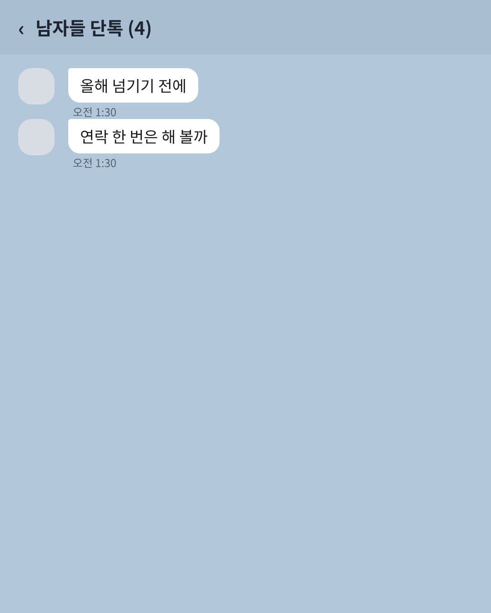
남자들끼리는 이렇게 말해요.
"올해 넘기기 전에 연락 한 번은 해 볼까."
(해가 바뀌면 더 못 할 것 같거든요.)
8/14
@mszexc
남자들끼리 하는 말 #75
그래서 구별해야 해요.
외로워서인지, 돌아오고 싶어서인지.
(외로움은 그날 밤 연락, 진심은 다음 날도 연락.)
9/14
@mszexc
남자들끼리 하는 말 #75
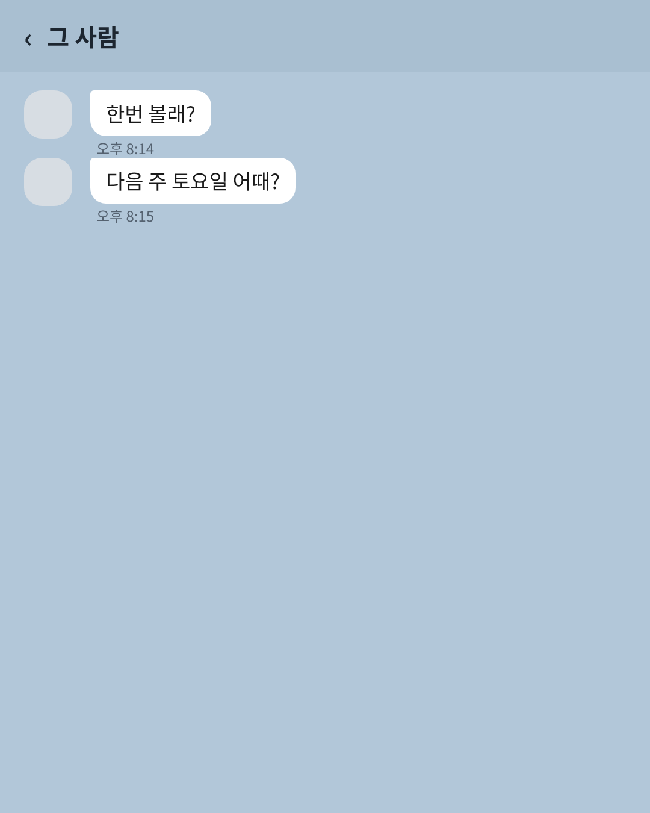
진심인 연락은
약속을 잡으려고 해요.
("한번 볼래?" 다음에 날짜가 나와요.)
10/14
@mszexc
남자들끼리 하는 말 #75
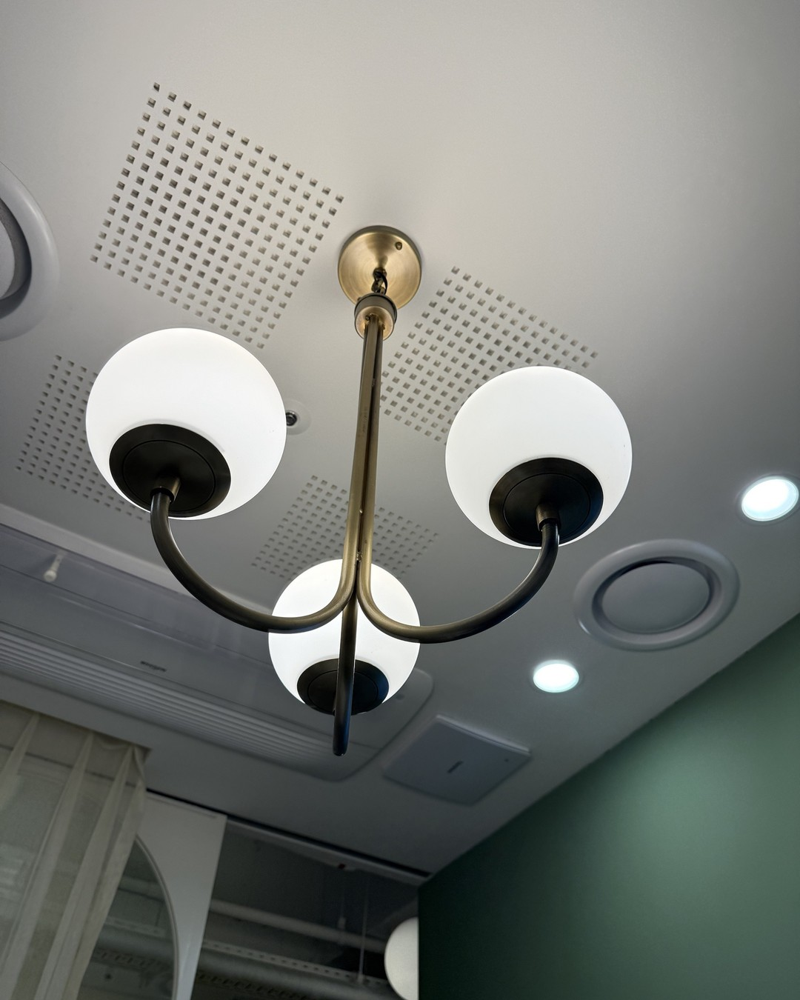
연락이 오면 이렇게.
"연락 고마워. 무슨 일 있어?"
(반갑게, 그러나 내 마음을 먼저 다 보여주지 마세요.)
11/14
@mszexc
남자들끼리 하는 말 #75
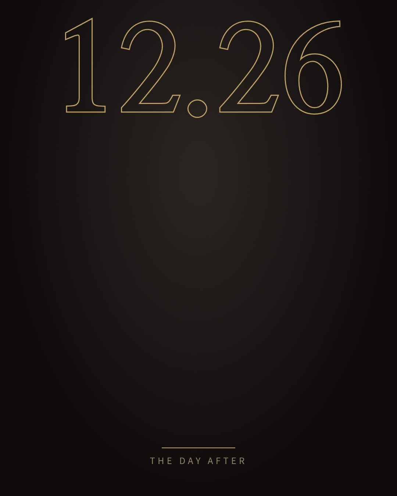
크리스마스 당일에 보자고 하면
하루 미뤄 보세요.
(진심이면 26일에도 만나고 싶어 해요.)
12/14
@mszexc
남자들끼리 하는 말 #75
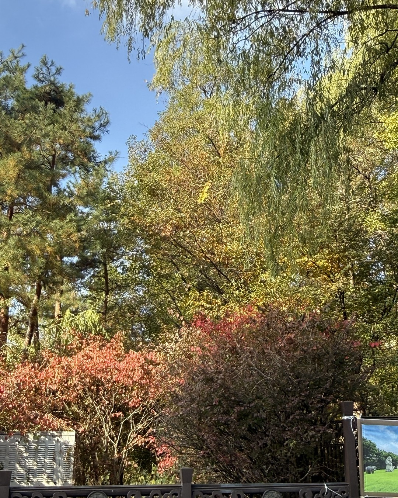
연말의 연락은 날짜가 시키고
진심은 그다음 날 보여요.
13/14
@mszexc
남자들끼리 하는 말 #75
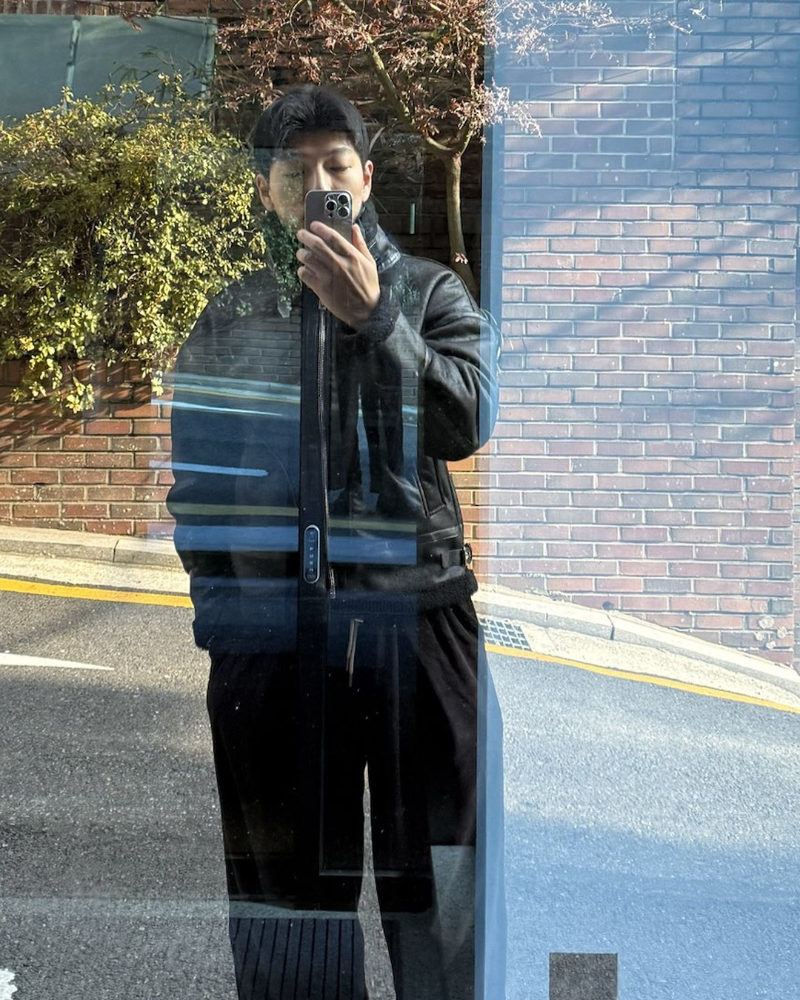
이것만 기억하세요.
크리스마스 연락보다, 그다음 날 연락을 보세요.
남자가 하는 말의 뜻은 전자책 1·2권에 · 프로필 링크에서 무료로 받아보세요
14/14
@mszexc
남자들끼리 하는 말 #75